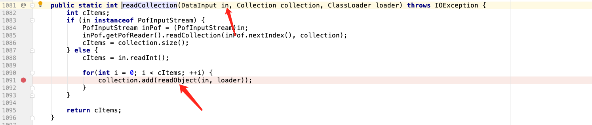
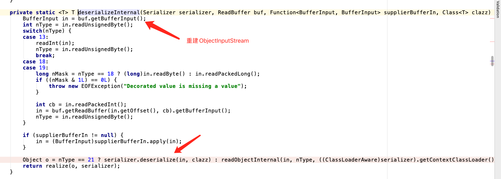
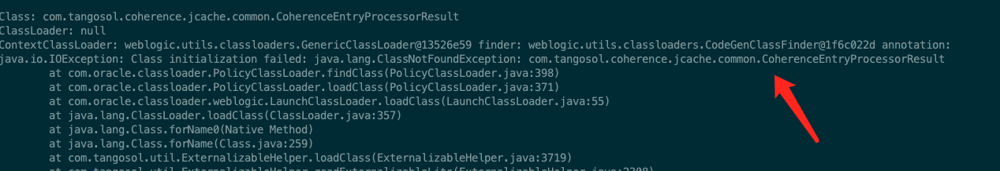

How Did I Find Weblogic T3 RCE
文章首发于先知社区
获得噱头oracle公开致谢

之前这个补丁没有修好，有CVE-2021-2135和CVE-2021-2136两种绕过。
挖不动，把之前思路再发出来，等下个补丁日向师傅们学习了。
CASE 1
最初引起我注意的是ExternalizableLite#readExternalizableLite，可以看到这里直接从数据流里面读取了类名并新建对象。
下面又会调用value自身的readExternal((DataInput)in)方法。
新建出来的对象会调用自己的readExternal。
当对象构造好之后又会在realize中调用readResolve方法
结合这里三点来看，相当于是一个免黑名单检查的反序列化场景。
我们只需要往上回朔，看能否到反序列化的入口点就行了。

然后全局搜com.tangosol.util.ExternalizableHelper#readObject(java.io.DataInput)，可以在很多类的readExternal(java.io.DataInput)中看到这样的调用。
回朔到这一步的时候我还以为成了，但是测了一下发现，在反序列化的时候java根本不会调用这个方法。因为这里函数的签名是readExternal(java.io.DataInput)而不是正统的readExternal(java.io.ObjectInput)。
有些不甘心，于是乎把coherence.jar里面的readExternal(java.io.ObjectInput)全部抓了出来。
1 | com.oracle.common.internal.util.Histogram |
数量不是很多，一个一个手工看。很快啊，我啪一下就点到com.oracle.common.internal.util.Histogram#readExternal(java.io.ObjectInput)里面了。
这个地方有强制类型转换，那么刚才的链路不就续上了？
继续跟进，再一次失望，发现这里只读取长整型，并没有调用readObject。
然后接下来的所有类要么是转换成了DataInput但是没有readObject。要么是根本就没有强制转换。
还是不甘心，又看了一遍，在com.tangosol.net.security.PermissionInfo#readExternal(java.io.ObjectInput)处事情出现转机。
我发现在调用readCollection的时候传入的ObjectInput in会被隐式转换成DataInput in，并且里面刚好有readObject。

到这里一条从readExternal(java.io.ObjectInput) 到无视黑名单的反序列化路线在理论上似乎已打通，接下来的就是gadget后半段是选择，立马想到的是TemplatesImpl和RemoteConstructor（CVE-2020-14644）。我选择了后者，把payload构造好，再打上10月补丁（感谢给我补丁的师傅）一发入魂。
ps：这里readExternal(java.io.ObjectInput) -> 无视黑名单的readObject的结论是不严谨的，选择TemplatesImpl也是打不通的，这个原因后面会解释。确实很尴尬，虽然能RCE，但是当时急于验证并未全流程调试过，对这个洞的理解比较片面。
至此第一个洞就结束了，当晚就给官方提漏洞。后面的几天我在反思这个洞，
- 为什么我能挖到？我想我能挖到原因是
weblogic官方没有bug bounty前人可能没有注意到有进入到readExternal(DataInput in)通路。 - 为什么readExternal(ObjectInput in)可以续上？我想因为readExternal本来就是给程序员自定义反序列化数据的地方，而readExternal(DataInput in)里面是coherence自己的反序列化逻辑，所以从ObjectInput in能到DataInput in算是题中应有之义。
- 这种反序列化绕过方式属于哪种类型？我想应该是二阶反序列化类型。
CASE 2
几天后，我收到了官方回复的邮件，从它们回复中可以看到它们把这个链关键认定为RCE involving LambdaIdentity。此时，我觉得很奇怪难道后半段不是可以灵活吗？如果我重新找一个新入口配上7u21后半段岂不是能再混一个CVE？。然后抓了一下整个coherence lib目录下的所有jar包的readExternal(java.io.ObjectInput) 。
1 | com.oracle.common.internal.util.Histogram |
倒数两个是比上次只跑conherence.jar多出来的，经过验证在conherence-web.jar中的com.tangosol.coherence.servlet.AttributeHolder满足条件。
把TemplatesImpl打到m_Value之后，发送payload后发现控制台报错。发生肾么事了？我一看，哦原来啊是没过黑名单，这就引起了对这个漏洞细节的进一步探究。
在com.tangosol.util.ExternalizableHelper#readObjectInternal下断点可以看到它并没进入，预期的readExternalizableLite而是进入了readSerializable中
在readObject中DataInput in会重新“转换”回带黑名单的InputStream，所以失败。
此时，心理又有两个疑问
- 输入流为我所控，那我把nType改成10，强行进入readExternalizableLite行不行？
- 为什么RemoteConstructor可以打成功？
首先回答第一个问题，可以但是行不通，就算真的把TemplatesImpl new出来了之后的强转也过不了。
其次，就算真的成功他也没有readExternal方法（即没有实现ExternalizableLite接口）。
到这里RemoteConstructor可以打的原因也很明显了RemoteConstructor实现了ExternalizableLite接口。
所以这个攻击面的利用条件是：
- 一个java.io.ObjectInput强转成java.io.DataInput的点
- 强转成java.io.DataInput后需要有进行ExternalizableHelper.readObject的操作
- 一个实现了ExternalizableLite的接口高危类
不过这已经足够了，因为conherence里面的Extractor都实现这个接口。
一开始，我其实是想手工挖的，那段时间真的是看的我头皮发麻，而且因为实现了ExternalizableLite接口是在是太多也很难保证自己完全不重不漏，大多数readExternal里面都只有赋值没有别的操作，休息了几天后我决定用魔法打败魔法，拿之前写的自动化工具跑。结合历史漏洞我决定以readExternal(DataInput in)为source，以com.tangosol.util.extractor.AbstractExtractor#compare为sink开动化跑。
跑了一会，从一堆误报中看到了希望的曙光。
最后证明了这个确实可行。
CASE 3
在手工看的那段时间，虽然头皮发麻但并不是没有收获，看了几个版本的weblogic经历了“卧槽,这里怕不是有洞”到”卧槽,被黑名单全防住了，全防出去了啊”很多次后，我隐约觉得coherence已经可以造成危害的点全部加入黑名单套餐了，不会有全新的链了（等被打脸），但二阶反序列化的点还有机会！
这次引起我注意的是com.tangosol.coherence.jcache.common.CoherenceEntryProcessorResult。可以看到在反序列化时它会读一个Binary进来，然后对Binary进行一个fromBinary的操作。
我注意到com.tangosol.util.ExternalizableHelper#fromByteArray中会把byte[]数组重建成BufferInput进行反序列化，因为重建所以没有黑名单过滤。

这个时候，我感觉又成了。构造好payload打过去，被weblogic防出去了。一看，是2找不到类，后面确认了一下，这个类在coherence-jcahe.jar里面，这个包并没有被weblogic加载进来。

但是就这么放弃是不可能的，我决定找到其他fromBinary的调用点，这里我选择直接打开JD-GUI搜，发现SimpleBinaryEntry这个看起来品相很好，它的getValue调用了ExternalizableHelper.fromBinary方法而其toString方法又调用了getValue。
这里还有细节需要注意m_serializer是transient的，如果用BadAttributeValueExpException.readObject() -> TiedMapEntry.toString()是不可行的，后续反序列化会因为m_serializer为null而失败。
所以这里还是需要以readExternal为入口进来，因为readExternal是不受transient限制的。因为走这种反序列化当对象实现了SerializerAware时会自动插入serializer。
半自动化跑了一下，虽然没有绝对跑出来（没有用指针分析），但是有一个参考已经足够了：
小结
总结一下trik
- 在挖新的之前，可以调研历史CVE和补丁学习前人思路。
- 找二阶反序列化，二阶反序列化往往出现在readExternal处。二阶反序列化，既可以是标准的Byte字节流型（CVE-2016-0638），也可以是jrmp带外利用（CVE-2017-3248），还可以是一些变种比如这里的cve-2020-14756开发自实现的反序列化，甚至可以是开发在反序列化时使用了自己继承的ObjectInputStream里面但是里面重写readResolve方法（覆盖了原来的黑名单检查）。
- 自动化
How Did I Find Weblogic T3 RCE
https://cl0und.github.io/2021/08/31/How-Did-I-Find-Weblogic-T3-RCE/